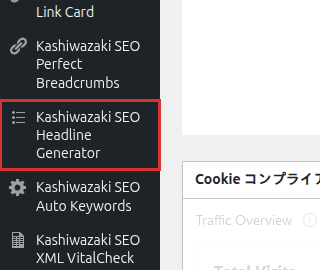

インストール・初期設定
Kashiwazaki SEO Headline Generator のインストールから初期設定までの手順を説明します。外部通信やCronジョブは使用しないため、シンプルにセットアップできます。
動作要件
| 要件 | バージョン |
|---|---|
| WordPress | 5.0 以上 |
| PHP | 7.4 以上 |
インストール手順
1
WordPress管理画面の「プラグイン」→「新規追加」→「プラグインのアップロード」からZIPファイルをアップロードします。または、wp-content/plugins/ ディレクトリにFTPで展開します。
2
「プラグイン」一覧画面で「Kashiwazaki SEO Headline Generator」を有効化します。
3
有効化後、管理画面の左メニューに「Kashiwazaki SEO Headline Generator」が追加されます。設定ページで見出し分析や目次生成の設定をカスタマイズできます。

ヒント
プラグインの有効化直後から、見出しへの自動ID付与と見出し分析機能が利用可能です。目次（TOC）の自動挿入は設定で有効化してください。
設定ページ
管理画面の左メニュー「Kashiwazaki SEO Headline Generator」をクリックすると設定ページが表示されます。見出し分析のオプションや目次生成の設定を行えます。
設定項目
| 設定項目 | 説明 |
|---|---|
| 見出し自動ID付与 | H1〜H6タグにアンカー用のIDを自動付与します。ページ内リンクやTOCに使用されます |
| 目次の自動挿入 | 記事の見出しからTable of Contentsを自動生成し、指定位置に挿入します |
| 分析対象見出しレベル | 分析や目次生成の対象となる見出しレベル（H2〜H6）を選択します |
| カニバリゼーション検出 | サイト全体で類似する見出しを検出する機能の有効/無効を設定します |
補足
設定の保存にはnonce検証とmanage_options権限が必要です。管理者権限を持つユーザーのみ設定を変更できます。
データ保存について
設定データはwp_optionsテーブルのkashiwazaki_seo_headline_optionsキーに保存されます。カスタムテーブルは作成しません。
| 項目 | 内容 |
|---|---|
| 保存先 | wp_options テーブル |
| オプションキー | kashiwazaki_seo_headline_options |
| カスタムテーブル | なし |
| 外部通信 | なし（AJAXハンドラはWordPress内部のadmin-ajax.phpを使用） |